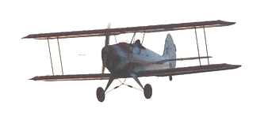

1914-1920Période
InflationContexte
MaillechortNouveaux alliages
LindauerType
La Première Guerre mondiale (1914-1918) provoque une crise monétaire majeure. L'or et l'argent quittent progressivement la circulation. De nouveaux alliages apparaissent (maillechort, bronze-aluminium…) et des monnaies de nécessité voient le jour.
L'après-guerre est marqué par une forte inflation et une instabilité qui ne seront durablement combattues qu'avec la stabilisation Poincaré de 1928. Les types Lindauer (pièces percées) et d'autres émissions de transition caractérisent cette période difficile.
Sources : infonumis.info · catalogues Le Franc & Gadoury
Les monnaies frappées au sortir de la Grande Guerre
'" />
25 Centimes LINDAUER Cmes SOULIGNÉ
Date : 1914 ; 941.133 ex. (pour un total de fabrication de 1.641.006 ex. de 1914 à 1917)
Nickel ; 24 mm ; 4.97g (théorique 5g)
Circulation : jusqu'en 1933
Tranche : lisse
Avers : R F de part et d'autre d'un trou central bordé d'un listel, sous un bonnet phrygien à gauche orné d'une cocarde tricolore (centre guilloché, cercle lisse, cercle guilloché), le tout dans une couronne ouverte composée d'une branche de chêne à deux rameaux ; au-dessous EM. LINDAUER ; le listel extérieur est doublé d'un ruban continu et dextrogyre reprenant la forme d'un épi de blé.
Revers : LIBERTÉ ∙ ÉGALITÉ / FRATERNITÉ / 25 CMES (souligné) au-dessus et de part et d'autre d'un trou central bordé d'un listel entouré par une branche d'olivier en deux rameaux dont la base coupe le millésime placé à l'exergue ; le listel extérieur est doublé d'un ruban continu et destrogyre reprenant la forme d'un épi de blé.
Références : F.170 G.379 ***** A DEPLACER DANS CLASSEUR **************